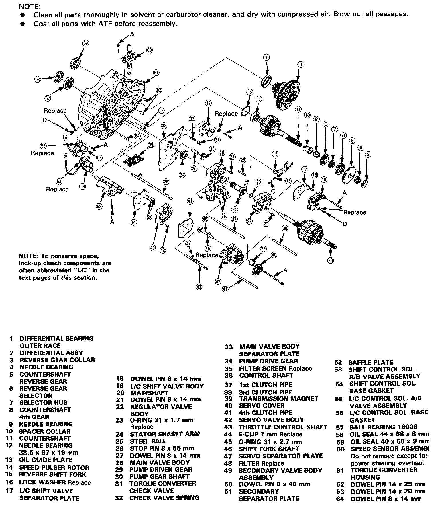
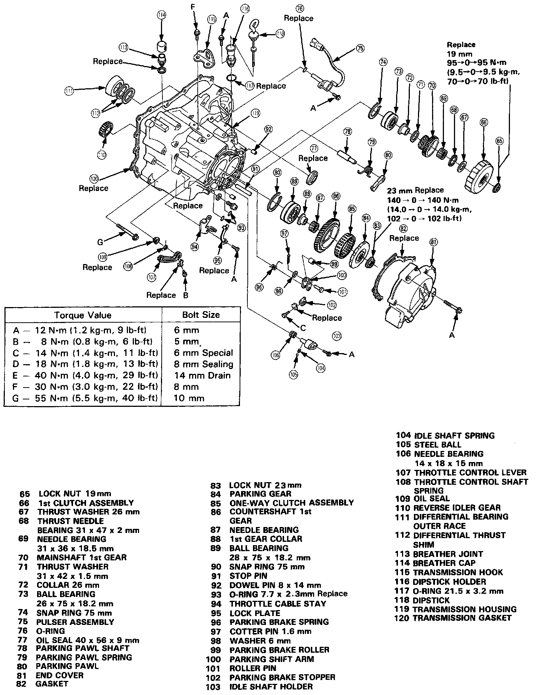

Operation CHARM
: Car repair manuals for everyone.
Home
>>
Acura
>>
1988
>>
Legend Sedan V6-2675cc 2.7L SOHC FI
>>
Repair and Diagnosis
>>
Diagrams
>>
Exploded Views
>>
Valve Body, A/T
>>
Main Valve Body
Main Valve Body


MAIN VALVE BODY